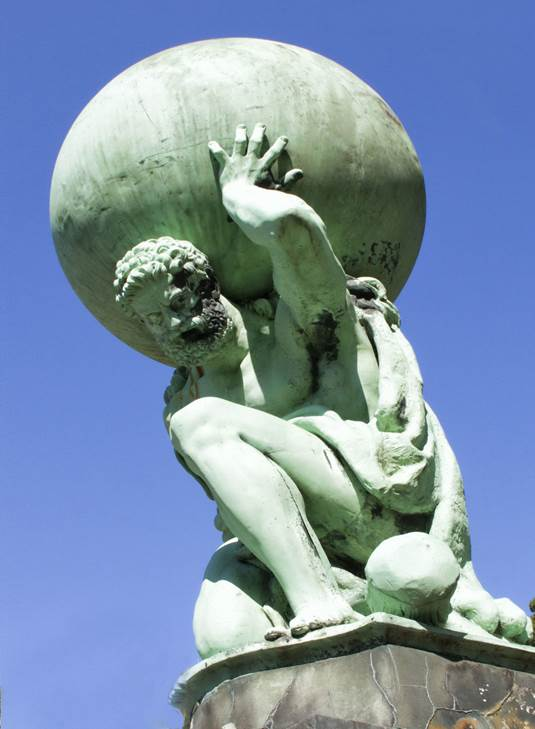
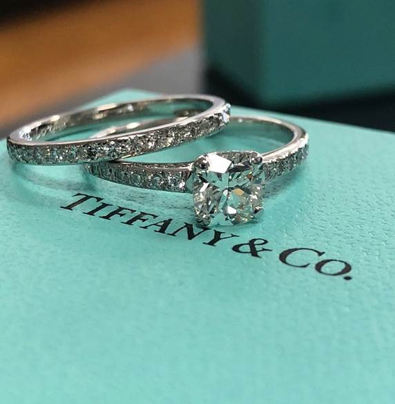
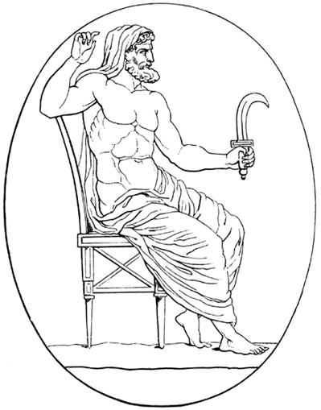
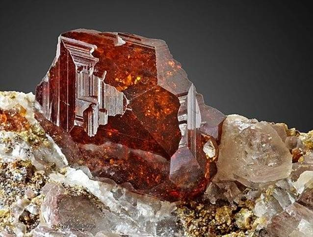
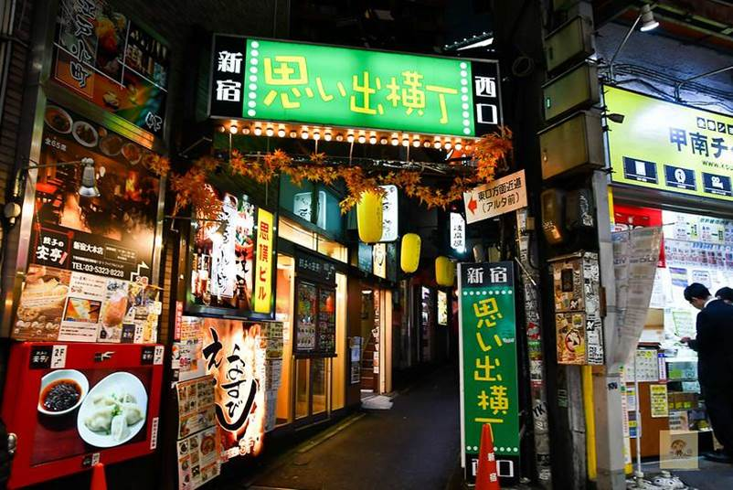
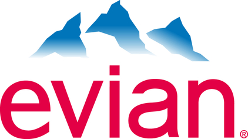

目录
出典：
Ø 白袍黛
Ø 回忆横丁小吃街
Ø 依云
Ø 力比多
Ø 广辞苑
出典：
阿特拉斯是希腊神话里的擎天神，是泰坦巨神的一族。他被宙斯降罪来用双肩支撑苍天。传说中，北非国王是阿特拉斯的后人。北非阿特拉斯山脉正是以他来命名。亚特拉斯航空飞机的垂直尾翼绘有擎天神双肩支撑苍天的图样，生有女儿风雨女神迈亚，她与天神宙斯生有儿子，奥林匹斯十二主神之一，神使赫尔墨斯。

Figure 1. 阿特拉斯雕像
蒂芙尼公司（英语：Tiffany & Co.，NYSE：TIF）是美国一间钟表和珠宝和银饰公司，在三越百货拥有分店。1837年，蒂芙尼公司由查理斯·路易斯·蒂芙尼和泰迪·杨在纽约市成立，开始时名称为蒂芙尼和杨（Tiffany & Young），商店设在下曼哈顿区，是一间专门销售时尚商品的精品店。当时公司由蒂芙尼、杨和艾利斯三人打理。
1853年，查尔斯·蒂芙尼掌握了公司的控制权，将公司名称简化为蒂芙尼公司（Tiffany & Co），公司也从此确立了以珠宝业为经营重点。蒂芙尼逐渐在全球各大城市建立分店。蒂芙尼制订了一套自己的宝石、铂金标准，并被美国政府采纳为官方标准。时至今日，蒂芙尼已成为全球知名的精品公司之一。
蒂芙尼蓝（Tiffany Blue）是蒂芙尼的标志色，在公司成立不久，蒂芙尼就采用了这种独特的颜色作为他们品质和工艺的标志。其蒂芙尼蓝色礼盒（Tiffany Blue Box）更成为美国洗练时尚独特风格的标志。

Figure 2. 蒂芙尼珠宝
克洛诺斯，是古希腊神话中的第二代众神之王，原为第一代神王神后乌拉诺斯和盖亚的儿子，泰坦十二神中最年轻的一个。人们常常把他跟古希腊俄耳甫斯教神话的时间之神柯罗诺斯相混淆。值得注意并区分的是，虽然同属古希腊神话体系，但柯罗诺斯与赫西俄德的《神谱》中的泰坦神族的神王克洛诺斯并不是一个人物，只是名字写法相似。两者虽同属于古希腊文明，但出自不同教派，彼此之间原本没有什么对应和关联。
克洛诺斯推翻了他父亲乌拉诺斯的残暴统治后，领导了希腊神话中的黄金时代，直到他被他自己的儿子宙斯推翻之后。他和其他的泰坦神大多被关在地狱的塔尔塔罗斯之中。

Figure 3. 农业之神克洛诺斯
支撑Laputa的宝石，石榴石（英语：Garnet），是一组在青铜时代已经使用为宝石及研磨料的硅酸盐矿物。常见的石榴石为红色，但其颜色的种类十分广阔，足以涵盖整个光谱的颜色。英文来自拉丁文"granatus"（"grain"，即粮食、谷物），可能由"Punica granatum"（"pomegranate"，即石榴）而来[2]，它是一种有红色种子的植物，其形状、大小及颜色都与部分石榴石结晶类似。
石榴石在《圣经》故事的传说中担当了一角，有说法称挪亚方舟正是用石榴石照明。另外，有说法认为石榴石是古以色列人第一位大祭司（High priest）亚伦所佩带的彩色胸兜（Hoshen）的十二颗宝石之一，代表犹大支派（Tribe of Judah）。希腊神话中，哈底斯在交还珀耳塞福涅时给她吃下石榴籽，令她必须在一定时间内回到冥界。因此石榴石代表了忠诚、真实及坚贞。另外亦有石榴石在《古兰经》中照亮了第四个天堂的说法。

Figure 4. 石榴石
² 白袍黛
原文是白のマユズミ，白色的Mayuzumi，出自《指环王》，甘道夫在死而复生之后，从灰色的形象变为白色。暗喻黛的巨大变化。
Figure 5. 灰色（左）和白色（右）的甘道夫
新宿有一条位于西新宿1丁目的平民食街，叫做「思い出横丁」，中文译「回忆横丁」。有什麽回忆？这裡在第二次世界大战后已为食市，只是当时的新宿在战后仅为一片废墟，而且因战火导致受管制的粮食完全不足（如白米、麵条等），那时候动物的肉及内脏反而未受监管，才慢慢形成了串烧店… 那时候横丁满街是无牌黑市，惠顾的多为流民。直至一九五几年后政府发牌成为合法食店区，以往满街市井流民醉酒佬的情况至今已成回忆。
如果你是夜猫，预算去东京旅行夜晚一定会去食宵夜，住在新宿周边应该是不错的选择，因为这裡有大量深宵营业的食店。回忆横丁位于新宿西口附近，从横丁门牌入口延伸到尾的窄巷，绝大部份都是居酒屋及串烧店（日称烧鸟），越夜越热闹 …

Figure 6. 「思い出橫丁」小吃街
依云是来自数个靠近法国埃维昂莱班水源的一个矿泉水品牌，位于日内瓦湖南岸，与瑞士的洛桑隔岸相望。依云矿泉水公司（SAEME）由法国跨国公司达能集团所有，为仅次于雀巢饮用水公司销量世界二的饮用水公司（以体积计算）。除矿泉水之外，达能集团还将依云的名字用于一系列有机护肤产品、以及法国的豪华度假村。
在流行文化中，依云被描绘成一种奢侈而昂贵的瓶装水。它在阿嘉莎·克莉丝蒂的推理小说《东方快车谋杀案》中被命名，在好莱坞名人中受到欢迎。
依云的年产量为15亿升，其中40 %销售给了法国市场。依云水销量最高的市场分别为：法国、比利时、英国、瑞士。在美国进口饮用水市场中也有着不错的表现。依云在日本则为市占率第二高的饮用水品牌。

Figure 7. 依云商标
力比多（英语：Libido），意为性冲动，早期音译为力必多，该术语由西格蒙德·佛洛伊德提出，是身体内部的兴奋状态的本能，其欲念、动机的来源或力量。指人或某些动物见到、摸到、想到或听到与性相关的事物或声音，令人有一种兴奋的感官刺激，不能自制，尝试发生性行为。一些强迫性冲动有很多是与暴力、性相关的。但是事实上指一切源自于本我的欲望。
原由可以心理学、生理学等多方面解说其原理。例如性冲动是一种条件反射。荣格认为原欲不仅仅是性冲动，而且也是生命心灵中的一种类似气的力量，除表现在生长及生殖方面外，也表现于其他活动。
《广辞苑》，是日本最有名的日文辞典之一，由岩波书店发行。它的前身是博文馆所发行的《辞苑》。
《广辞苑》最初由日文学者新村出主编，于1955年5月25日发行第一版，目前已发行到第七版（2018年1月12日出版） [1] 。也收录了国内外社会情势的图片与地图约3000张，就像一部小型的百科全书。第五版收录了23万条词汇，其在日本的权威与可信度与三省堂所发行的《大辞林》并列两大辞典。
Figure 8. 各种版本的《广辞苑》